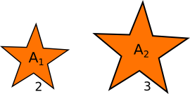
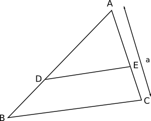
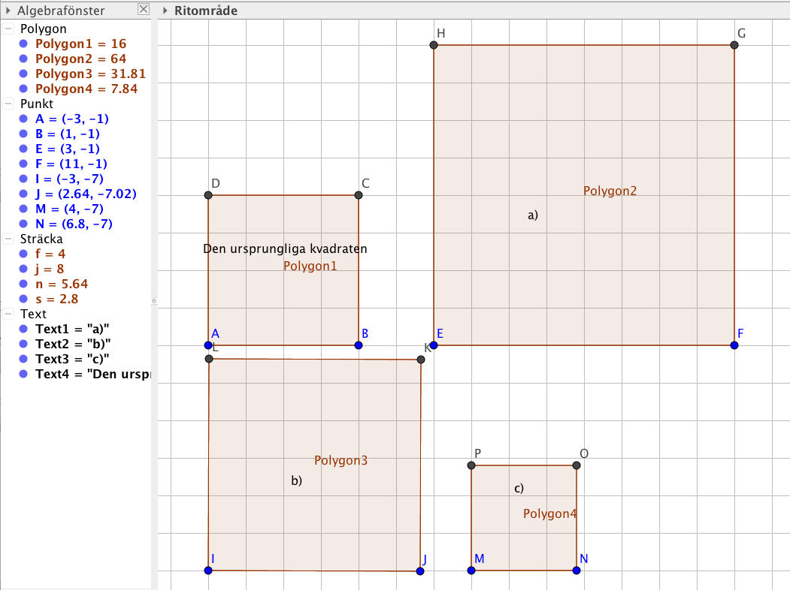

3. Likformighet och areor
Vi tar en rektangel och förstorar rektangeln så att den blir fyra gånger längre och bredare. Då märker vi att arean blir \( 4 \cdot 4 = 16 \) gånger större.

Exempel 1 Rektanglarna är likformiga i sidoskalan 3:5. Bestäm förhållandet för deras areor.

Samma sida för två likformiga figuer A och B betecknar vi med a och b. Deras areor betecknar vi med \( A_A \) och \( A_B \).
Då gäller att \( (\dfrac{a}{b})^2=\dfrac{A_B}{A_B} \).
Sidoskalan i kvadrat ger oss areaskalan, eller förhållandet för sidorna i kvadrat ger oss förhållandet mellan areorna.
Exempel 2 Hur många procent utgör den mindre stjärnans area utav den större stjärnans area?

Exempel 3 Förhållandet mellan BD och AD är 3:5. Hur stor andel utgör triangeln ADE:s area av triangeln ABC:s area?

Exempel 4 Sträckan DE delar triangeln ABC i två lika stora delar. Hur lång är sträckan AE om sträckan AC har längden \( a \)?

Lösning
Vi har att \( \dfrac{\triangle ADE}{\triangle ABC} =\dfrac{1}{2} \). Betyder att förhållandet för sträckorna \( AE \) och \( AC \) kan vi skriva som \( \dfrac{AE}{AC} =\dfrac{x}{a} = \sqrt{\dfrac{1}{2}} \).
\( \begin{array}{rl} \dfrac{x}{a} = & \sqrt{\dfrac{1}{2}} \\ \\ x = & a\sqrt{\dfrac{1}{2}} = \dfrac{a}{\sqrt{2}}. \\ \end{array} \)
Uppgifter
- Hur många gånger större blir den nya arean då sidan i en figur har längden 1 och den nya längden är
- 3
\( 3^2 = 9 \)
- 4
\( 4^2 = 16 \)
- 10
\( 10^2 = 100 \)
- 3
- Hur stor andel av den gamla arean utgör den nya arean om sidan
- förkortas till hälften.
\( 0,5^2=0,25 \)
- förkortas till en tredjedel.
\( (\dfrac{1}{3})^2 = \dfrac{1}{9} \)
- förkortas till en tiondedel.
\( (\dfrac{1}{10})^2 = \dfrac{1}{100} \)
- förkortas till hälften.
- Rita på GeoGebra en kvadrat. Rita en kvadrat som är likformig med den första men vars
- sida är dubbelt så lång,
- area är dubbelt så stor och
- area är hälften av den ursprungliga kvadratens area.
Arbeta med Regelbunden polygon verktyget, 5 från vänster, i menyn.
Något i stil med

- Bestäm arean för vilken figur som helst då sidan i den nya figuren
- blir tre gånger så lång?
\( 3^2=9 \)
- förkortas med hälften?
Den nya sidan är \( \dfrac{1}{2} \). Arean har värdet \( \dfrac{1}{4} \)
- är en fjärdedel av den ursprungliga längden.
Den nya sidan är \( \dfrac{1}{4} \). Arean har värdet \( \dfrac{1}{16} \)
- blir tre gånger så lång?
- Välj de alternativ som är rätt för påståendet. Hur många gånger skall sidan i en figur bli längre om arean skall bli
Påstående \( \sqrt{2} \) 2 3 4 Arean 3 gånger större. Arean 8 gånger större. Arean 15 gånger större. Arean dubbelt så stor. Bilda ett förhållande mellan areorna. Vad betyder att arean blir tre gånger större?Påstående \( \sqrt{2} \) 2 3 4 Arean 3 gånger större. Arean 8 gånger större. Arean 15 gånger större. Arean dubbelt så stor. - Två rektanglars areor är 15 cm2 och 25 cm2. Ena sidan i den mindre rektangeln är 9 cm. Hur lång är motsvarande sida i den större rektangeln?
Vi bildar ett förhållande, \( \dfrac{25}{15}=(\dfrac{x}{9})^2 \) som ger att \( x=3\sqrt{15} = 11,619 \) cm.
- Hur stor många procent utgör arean av de små cirklarna utav den stora cirkeln? Märk att du klarar dig bra utan att bestämma arean av cirklarna. Arbeta enadast med förhållanden.

Förhållandet mellan cirklarnas radier är 1:3. Förhållandet mellan cirklarnas areor är \( (\dfrac{1}{3})^2 = \dfrac{1}{9} \).
Totala förhållandet är \( 7 \cdot \dfrac{1}{9}= 0,77\ldots = 77,8 \) %.
Alltså utgör de små cirklarna 77,8% av den stora.
- En tomt är 2,5 ha (hektar) och den består av 150 m strandlinje. Hur lång är strandlinjen på en karta om tomtens area är 1,1 cm2 på kartan?
2,5 ha = 250 ar = 25000 m2 och 1,1 cm2 = 0,011 dm2 = 0,00011 m2.
Vi bildar förhållandet \( \dfrac{x}{150} = \dfrac{0,00011}{25000} \) som ger \( x = 0,00000066 \) m.
- Förhållandet mellan AB och AD är 8:5. Hur många procent större är triangeln ABC än triangeln ADE?

Eftersom sidoskalan för \( \dfrac{AB}{AD} \) är \( \dfrac{8}{5} \) så är areaskalan \( \dfrac{8^2}{5^2}=2,56 \). Detta betyder att triangeln ABC är 156 % större än triangeln ADE.
- Bestäm förhållandet mellan AE och AC då vi vet att triangeln ADE:s area utgör två tredjedelar av triangel ABC:s.
Bilda modigt ett förhållande.
Eftersom vi bildar ett förhållande mellan två sträckor ger vi sträckan AE värdet 1. Vi får då följande förhållande \( (\dfrac{x}{1})^2 = \dfrac{3}{2} \) som ger att \( x=\sqrt{\dfrac{3}{2}} \).
Förhållandet AE : AC är \( 1: \sqrt{\dfrac{3}{2}} \).